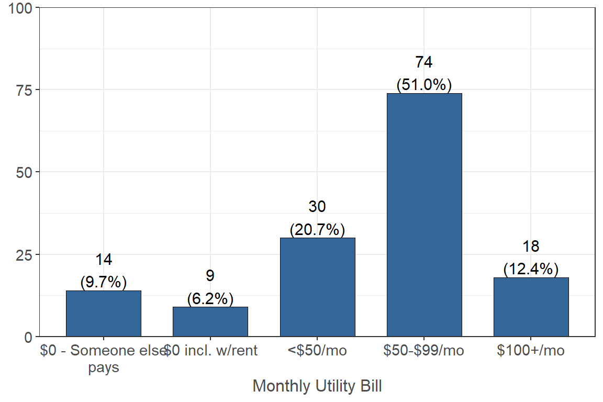
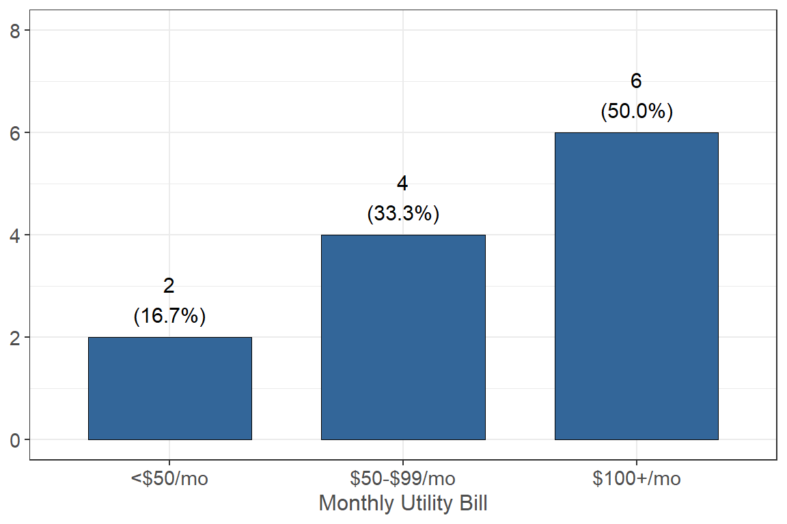
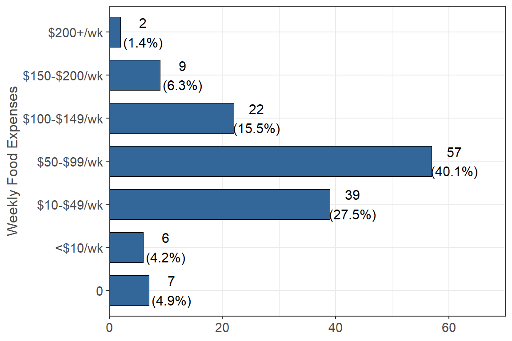

Expenses
Rent
Please estimate the monthly housing/rent/mortgage bill (garbage may or may not be included) that you pay for with your own money.
43.5% (n = 64) of respondents reported that they pay $100-$500 a month in housing/rent with their own money and 35.4% (n = 52) reported that they pay $500-$1,000 a month. Only 7.5% (n = 11) reported that they pay $0 because someone else pays.
If someone else pays for you, how much do they pay each month?
Out of the respondents who said they have others pay for their monthly rent/housing, 44.4% (n = 4) reported that they pay $500-$1000 and 33.3% (n = 3) pay $1000-$1500.
Utilities
Please estimate the monthly utility (i.e. gas, electric, water, and garbage) bills that you pay for with your own money.

51.0% (n = 74) of respondents reported that they pay $50-$99 a month for their utility bill, 20.7% (n = 30) reported that they pay less than $50 a month, and only 9.7% (n = 14) reported that they pay $0 because someone else pays.
If someone else pays for you, how much do they pay each month?

Out of people who have someone else pay for their monthly utility bill, 50% (n = 6) reported that they pay $100+ a month and 33.3% (n = 4) reported they pay $50-$99 a month, and 16.7% (n = 2) reported they pay less than $50 a month.
Other (internet, TV, cell phone, medical, transportation)
Please estimate your monthly internet, cable tv/satellite, and streaming service bills that you pay for with your own money.
59.0% (n = 85) of respondents reported that they pay less than $50 a month for their internet/TV bill and 21.5% (n = 31) reported that they pay $50-$99 a month. 12.5% (n = 18) reported that they pay $0 because someone else pays and 4.9% (n = 7) reported they pay $0 because it is included in their rent.
If someone else pays for you, how much do they pay each month?
Out of the respondents who reported that someone else paid for their monthly internet/TV bill, 42.9% (n = 6) reported that they pay less than $50 a month, 28.6% (n = 4) reported they pay $50-$99 a month, and 28.6% (n = 4) reported they pay more than $100 a month.
Please estimate the monthly mobile/cell phone or landline phone bills that you pay for with your own money.
26.2% (n = 38) of respondents reported that they pay $50-$99 a month for their monthly cell phone bill, 18.6% (n = 27) reported that they pay more than $100 a month, and 42.8% (n = 62) reported that they pay $0 because someone else pays for them.
If someone else pays for you, how much do they pay each month?

Out of the people who reported that they have someone else pay for their monthly cell phone bill, 41.3% (n = 19) reported that they pay more than $100 a month, 30.4% (n = 14) reported that they pay less than $50 a month, and 28.3% (n = 13) reported that they pay $50-$99 a month.
Please estimate the monthly medical expenses (including insurance premiums, co-pays, deductibles, medications, etc.) that you pay for with your own money.

The majority of respondents (76.3% n = 100) reported that they pay $0 a month in medical expenses because they have no medical expenses, 12.2% (n = 16) reported that they pay $25-$100 a month, and 9.9% (n = 13) reported that they pay less than $25 a month.
What type of health insurance do you currently have?
| Health Insurance | n | % |
|---|---|---|
| No insurance plan | 16 | 12.70 |
| Plan through employer | 1 | 0.79 |
| Medicaid/Medical | 69 | 54.76 |
| Medicare | 5 | 3.97 |
| Other gov program | 1 | 0.79 |
| Plan through parents | 34 | 26.98 |
Please estimate the monthly transportation bills that you pay for with your own money
33.1% (n = 47) of respondents reported that they pay less than $25 a month on transportation, 22.5% (n = 32) reported that they pay $100-$199 a month on transportation, and 9.2% (n = 13) reported that they pay $0.
Monthly & School Supplies Expenses
Please estimate your monthly expenses for any other regularly occurring expenses such as credit card payments, gym membership, child care expenses, etc. that you pay for with your own money.
35.5% of respondents reported that they pay $0 for other regularly occurring expenses, 15.9% (n = 22) reported that they pay $100-$149 a month, and 14.5% (n = 20) reported that they pay $10-$49 a month.
Please estimate your semester expenses for school supplies, textbooks, school related printing expenses, etc., that you pay for with your own money.
20.8% (n = 30) of respondents reported that they pay $151-$250 a semester on expenses such as school supplies, textbooks, and school related printing expenses, 18.1% (n = 26) reported that they pay $251-$350 a semester, and 15.3% (n = 22) reported that they pay $451-$550 a semester.
Food, Alcohol, Cigarettes, etc. Expenses
Please estimate the weekly expenses for food and non-alcoholic beverages that you pay for with your own money.

40.1% (n = 57) of respondents reported that they pay $50-$99 a week for food and non-alcoholic beverages, 27.5% (n = 39) reported that they pay $10-$49 a week, and 4.9% (n = 7) reported that they pay $0.
Please estimate the weekly expenses for alcoholic beverages that you pay for with your own money. Include all weekly beverage expenses from house parties, bars, liquor stores, etc.

31.5% (n = 45) of respondents reported that they pay less than $10 a week on alcoholic beverages, 19.6% reported that they pay $10-$49 a week, and 42.7% (n = 61) reported that they pay $0 a week on alcoholic beverages.
Please estimate the weekly expenses for cigarettes, marijuana and/or similar expenses that you pay for with your own money.

Most respondents, or 84.5% (n = 120), reported that they pay $0 a week on cigarettes and tobacco, 5.6% (n = 8) reported they pay less than $10 a week, and 6.3% (n = 9) reported they pay $10-$49 a week.
This work was supported by insert grant information here. Any use of these results in further work must use the following citation:
Center for Healthy Communities, "Website name", June 2020. Retrieved on xx-xxx-xxxx from https://chicocalfresh.github.io/bns-website/index.html